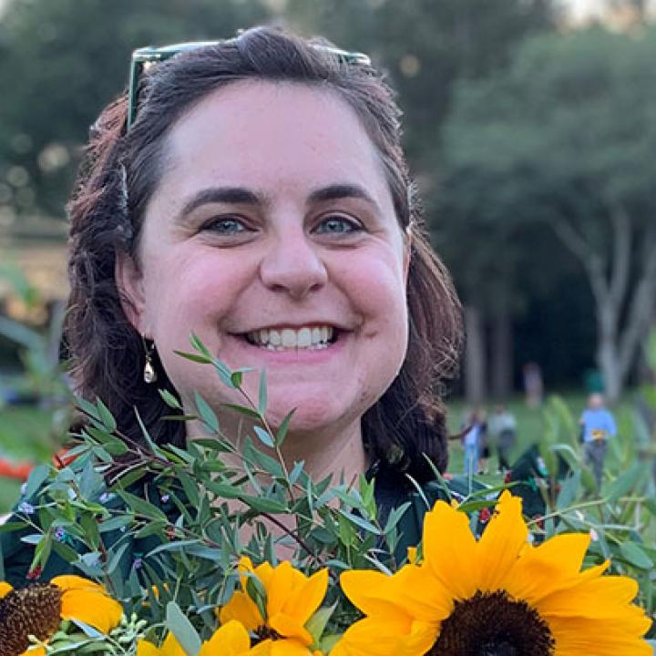

Team
Our Team & Board Members
The establishing board of BERC is composed of the original nine founding members of BERC. The bylaws of BERC are available for viewing here.
Dr. Nia Johnson (she/her)
Chicago Botanic Garden & Northwestern University
Website
I am originally from Atlanta, GA and earned my B.S. from Howard University. After teaching grade school science with Teach for America, I earned my M.S. and Ph.D. from the University of Michigan in Ecology and Evolutionary Biology where my research focused on understanding the impacts of modern agricultural practices on the eco-evolutionary dynamics of plant-herbivore interactions and plant defense. Currently, as a Postdoctoral Researcher affiliated with the Synthesis Center for Conservation and Restoration (sCORE) at the Chicago Botanic Garden, I collaborate within interdisciplinary teams to carry out projects focused on plant restoration. My personal and professional interests stand at the intersection of education, research, and advocacy, driven by a commitment to diversity and inclusion in the scientific community.
Dr. Alicia Foxx (she/her)
Chicago Botanic Garden & Northwestern University
Website | Publications
I am a child of the Black community, and I believe in respect, reciprocity, community and support, among other things. I work to bring equity, inclusion, accessibility, and social justice for historically minoritized people including Black, Indigenous, Latine, and other People of Color. My aim is to ensure that we all have a seat at the proverbial table, because it is the right thing to do. By training, I am a plant ecologist and I study how variation in plant traits influences how plants interact with each other, with their environment, and with microbes. A large part of my research is related to applications in restoration science and practice and I incorporate experimental research and synthesis to interrogate and improve our understanding of plants and their secrets.
Dr. Rebecca Barak (she/her)
Chicago Botanic Garden & Northwestern University
Website | Google Scholar

I am a Conservation Scientist at Chicago Botanic Garden, and an Adjunct Assistant Professor at Northwestern University in the Program in Plant Biology and Conservation. I study biodiversity and decision-making for tallgrass prairie restoration. I also study lawn alternative plantings with collaborators at Chicago Park District, University of Michigan-Flint, and other institutions. Students that work with me study many aspects of biodiversity and conservation in urban and suburban systems in the Chicago area.
Regina Mae Francia (she/her)
Northern Illinois University
My broad research interests include biodiversity, restoration ecology, and environmental justice. I am San Diego native and proud Filipino-American. At UCLA, I received a B.S. in Environmental Science and concentration in Environmental Health and with that research experiences that empowered and motivated me to address widespread ecological destruction.
For my PhD, I am working on our biodiversity-ecosystem function experiment which was established based on realistic combinations of plant species found at Nachusa Grasslands, a restored tallgrass prairie. For my dissertation, I aim to address 1) how do community changes in diversity (i.e., species richness and functional trait diversity) affect ecosystem function in a restored prairie ecosystem? (2) how does management of restored grasslands such as grazing influence ecosystem function?
Sarah Hollis (she/her)
Chicago Botanic Garden & Northwestern University
Sarah is a Master’s student studying Plant Biology and Conservation at Northwestern University and the Chicago Botanic Garden and a Research Assistant at the Dixon National Tallgrass Prairie Seed Bank. She graduated with a B.S.A. in Neuroscience from the University of Texas at Austin in 2021. Her honors thesis, Galápagos’ Blackberry Problem: A Novel Approach to Rubus niveus Management in the Galápagos Islands, examined the status of invasive species Rubus niveus in the Galápagos Islands and proposed support for local agricultural systems as a means of mitigating its impact. Sarah is a citizen of the Cherokee Nation. In her free time, she enjoys making ceramics and reading science fiction.
Dr. Holly Jones (she/her)
Northern Illinois University
Website | Publications | Twitter

I am a Professor at Northern Illinois University. My Evidence-based Restoration Lab studies how ecosystems recover from disturbances and the best ways to restore ecosystems. My field work has taken me to far-flung islands in the Aleutians and I have current research projects on New Zealand islands and at Nachusa Grasslands in Franklin Grove, Ill. I am passionate about social justice, diversity, equity, and inclusion (DEI) in STEM fields, and specifically restoration and conservation. I co-founded our department’s DEI committee and our university’s Anti-racism Collective to help achieve those goals.
Amelia Renner (she/her)
Chicago Botanic Garden
LinkedIn

Amelia Renner is a recent graduate of Macalester College. She majored in biology and minored in data science. Her research interests include urban ecology, non-native plant invasion, and restoration ecology. Her current research focuses on the impact of deer on Alliaria petiolata (garlic mustard) invasion in Minnesota oak forests.
Samantha Rosa (she/her)
Chicago Botanic Garden, Northwestern University, University of Maryland
Samantha Rosa is a Black educator and child of southern wetlands from Miami, Florida. She received her BA in Geology from the University of Florida and went on to spend eight years serving as a teacher and STEM Coordinator for students in early childhood through high school. Her work with children motivated her to become a scientist.
Samantha is currently wrapping up her MS thesis in Plant Biology and Conservation at Northwestern University and the Chicago Botanic Garden while beginning her Ph.D. at the University of Maryland. Her research focuses on the reproductive ecology and nectar chemistry of migrating mangroves in Florida. As a graduate student Samantha has continued to craft curriculum and design programs across the country that foster BIPOC children’s STEM identities and empower them to investigate their own questions about the natural world.
Dr. Evelyn W. Williams (she/her)
Adaptive Restoration LLC
LinkedIn | Publications

Evelyn is a restoration ecologist with a background in conservation genetics. Evelyn first got a taste of natural resource management working at Itasca State Park in Minnesota and as a student at Carleton College working in the Cowling Arboretum. She received her Ph.D. in Botany at the University of Wisconsin – Madison, where she studied fern genetics and demography in the Upper Peninsula of Michigan. Following that, she worked at the Chicago Botanic Garden on diverse conservation projects, including studying the importance of evolutionary diversity in prairie restorations. She now works for Adaptive Restoration in Mount Horeb, WI, as a restoration ecologist and member of the fire crew.